Binary space partitioning
Contents
Binary space partitioning#

Fig. 85 John Carmack developer of Doom, the first game to use binary space partitioning#
The disadvantage of the painter’s algorithm is that every time the camera position or direction changes the vertex distances need to be recalculated and the face array sorted which is computationally inefficient. A method used in computer games that provides the correct rendering order for static polygons in a virtual environment is called Binary Space Partitioning (BSP). Binary space partitioning was first described in the 1960s by Schumacker et al. [1969] to improve the rendering of three-dimensional scenes using computer graphics. However, it wasn’t until the early 1990s that BSP became widely used in the computer game industry to improve the performance of rendering three-dimensional scenes. id Software’s seminal game Doom [Carmack et al., 1993] was the first game to use this method and all games with three-dimensional virtual worlds have since have used BSP.

Fig. 86 Doom by id Software was the first computer game to use binary space partitioning for removing hidden surfaces#
Definition 23 (Convex set of polygons)
A convex set of polygons is a set of polygons where each polygon is front facing to every other polygon.
Definition 24 (Hyperplane)
A hyperplane is a subspace with a dimension one less than that of its vector space.
Binary space partition recursively subdivides the world space into subspaces where each subspace contains a convex set. The subdivisions are achieved by inserting a hyperplane along the plane which contains one or more coincident polygons. The purpose of dividing the world space in this way is that polygons that are members of a convex set cannot obscure each other when viewed from a position in the front subspace of the polygons, in other words we can render these polygons at the same time in painter’s algorithm.
Binary space partitioning is primarily used in the rendering of static polygons in the world space. For example, consider a computer game that requires the player to navigate a three-dimensional virtual environment. The polygons that construct the walls, floors, buildings etc. are known prior to the player navigating the map and remain fixed in place. So we can perform binary space partitioning before the scene needs to be rendered in order to save computational effort whilst the game is being played.
BSP trees#
The subdivisions in binary space partitioning are recorded in a data structure known as a binary tree is used. A binary tree is a type of tree where each node has at most two child nodes (nodes that are connected by output edges) and at most one parent node (nodes that are connected by input edges). The child nodes are drawn to the left and right hand side beneath the parent node and are referred to as left child node and right child node respectively.
Fig. 89 A binary tree#
Consider the space containing the three polygons A, B and C in Fig. 90.The set of polygons \(\{ A, B, C \}\) is not a convex set since none of the three polygons face each other. If we subdivide the space by inserting a polygon along the same plane that polygon \(A\) lies on then polygon \(B\) is in the front subspace and polygon \(C\) is in the back subspace. We represent this subdivision as a binary tree with polygon \(A\) contained in the parent node, polygon \(B\) contained in the left child node and polygon \(C\) contained within the right child node. The choice of which node to insert the hyperplane along is arbitrary and we can select any polygon in the set, however, there may be optimality considerations.
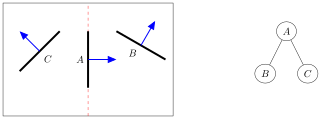
Fig. 90 Polygons in the front subspace of the hyperplane are listed in the left child node and polygons in the back subspace are listed in the right child node#
If two or more polygons lie on the same plane and have their normal vectors pointing in the same direction then we can insert a hyperplane along all of these polygons. This is advantageous as it reduces the number of polygons we have to deal with. For example, consider fig. 4.13 where polygons A and B are coincident. Polygon C is in the front subspace and polygon D is in the back subspace.
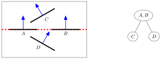
Fig. 91 Polygons that lie on the same plane can be used for the hyperplane#
The binary space partition of a world space is outlined in Algorithm 5.
Algorithm 5 (Binary space partitioning)
Inputs A set of polygons
Outputs A binary tree
If the set of polygons is convex set
Return
Else
Choose a polygon or polygons as the parent node
Insert a hyperplane along the parent node
List all polygons in the front subspace of the parent node in the left child node
List all polygons in the back subspace of the parent node in the right child node
Repeat algorithm for the left child node
Repeat algorithm for the right child node
Note that inserting a hyperplane into a space may result in the hyperplane intersecting with polygons (this is usually unavoidable).
Example 36
The plan view of a world space is shown in the diagram below. The polygons labelled \(A\) to \(T\) have norm vectors pointing into the interior. Construct a BSP tree for this world space.
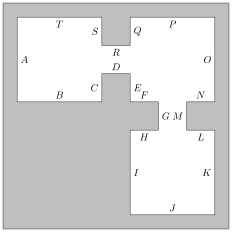
Solution
Let’s choose \(D\) as the first parent node. This choice is completely arbitrary and we could have selected any other polygon as the parent node. The hyperplane bisects \(A\) and \(O\) so we label the new polygons \(A_1\), \(A_2\), \(O_1\) and \(O_2\). Polygons \(A_1\) and \(O_2\) to \(T\) are in the front subspace of \(R\) so are listed in the left child node and \(A_2\) to \(O_2\) are in the back subspace of \(R\) and are listed in the right child node.
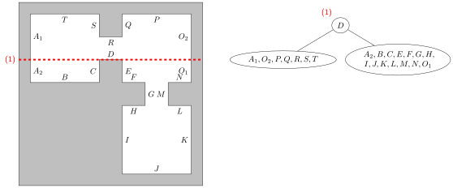
We now repeat the process with the left child node. Choosing \(S\) as the parent node we have \(A_1\) and \(T\) in the front subspace so we list these in the left child node and \(O_2\) to \(R\) in the back subspace so we list these in the right child node. Note that the other polygons do not exist in this subspace.
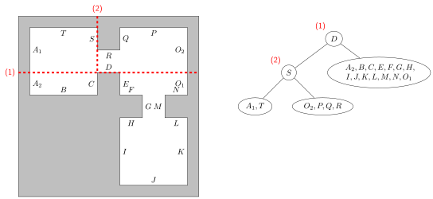
The left child node contains \(\{ A_1, T \}\) which is a convex set so we move to the right child node \(\{ O_2, P, Q, R \}\). Choosing \(Q\) as the next parent node we have \(O_2\) and \(P\) in the front subspace so we list these in the left child node and \(R\) is in the back subspace so we list these in the right child node.
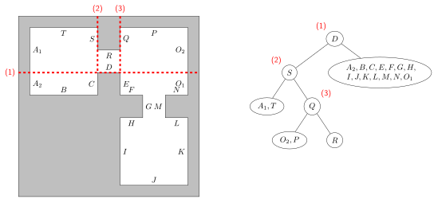
All nodes on a the left subtree of the root node \(D\) contain convex sets so we node move to the right child node of \(D\). Choosing \(E\) and \(I\) as the parent node we have \(F\), \(G\), \(H\) and \(J\) to \(O_1\) in the front subspace so we list these in the left child node and \(A_2\), \(B\) and \(C\) in the back subspace so we list these in the right child node.
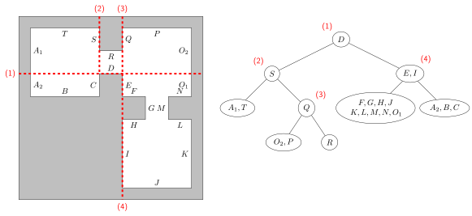
Moving to the left child node and choosing \(H\) and \(L\) as the parent node we have \(J\) and \(K\) in the front subspace so we list these in the left child node and \(F\), \(G\), \(M\), \(N\) and \(O_1\) in the back subspace so we list these in the right child node.
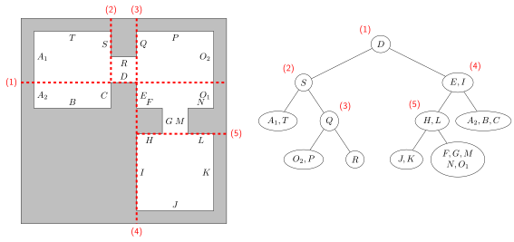
The left child node contains \(\{ J, K \}\) which is a convex set so we move to the right child node contains \(\{ F,G,M,N,O_2\}\). Choosing \(F\) and \(N\) as the parent node we have \(O_1\) in the front subspace so we list this in the left child node and \(G\) and \(M\) in the back subspace so we list this in the right child node.
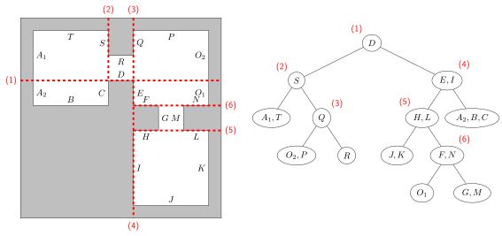
All subspaces now contain convex sets so the algorithm terminates.
Visible surface determination using BSP trees#
So far we can construct a BSP tree by performing subdivision of a world space. You might be forgiven in thinking how does BSP help with visible surface determination? If you consider what is actually happening with a BSP tree, we are determining which polygons are in front of the others. Therefore BSP trees lend themselves well to a technique similar to the painter’s algorithm where we render the furthest polygons from the camera first and the nearer ones afterwards. The problem with the painter’s algorithm is that every time the camera position changes, the distances of each polygon have to be recalculated. Therefore it is not a suitable method to use in computer games where the camera position is commonly controlled by the player and changing often. BSP trees provide the visibility ordering for a scene depending on the camera position relative to the root node of the tree.
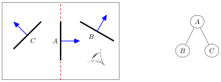
Fig. 92 Visible surface detection using BSP trees#
Consider the scene and the associated BSP tree shown in Fig. 92. The viewer is in the front subspace of the root node \(A\) so the polygons that are in the back subspace of A, in this case this is just \(C\), are further away from the viewer than the polygons in the front subspace of \(A\), which in this case is just \(B\). So the rendering order used by the painter’s algorithm can be determined by drawing polygons in the opposite subspace to the viewing position first. Notice that polygon \(C\) is contained in the left child node \(A\) and polygon \(B\) is contained in the right child node. So the rendering order of polygons using the painter’s algorithm can be determined using a BSP tree.
The visible surface detection using a BSP tree is performed using an in-order tree walk.
Algorithm 6 (BSP tree traversal)
Inputs A BSP tree
Outputs Rendering order for polygons
If current node is a leaf node
Render the polygons in the node
Else if viewer is in the front subspace of the current node
Repeat the traversal with the right (back subspace) child node
Render the current node
Repeat the traversal with the left (front subspace) child node
Else if the viewer is in the back subspace of the current node
Repeat the traversal with the left (front subspace) child node
Render the current node
Repeat the traversal with the right (back subspace) child node.
Example 37
Using the BSP given below, determine the rendering order for visible surface detection if the viewer is at position
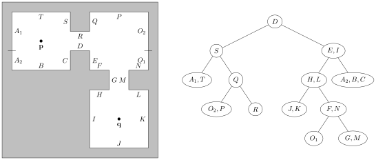
(i) \(\mathbf{p}\)
Solution
\(\mathbf{p}\) is in the front subspace of the root node \(\{D\}\) so move to the right child node
\(\mathbf{p}\) is in the back subspace of \(\{E,I\}\) so move to the left child node
\(\mathbf{p}\) is in the back subspace of \(\{H,L\}\) so move to the left child node
\(\color{red}\{J,K\}\) is a leaf node so we render it and return to the parent node
render \(\color{red}\{H,L\}\) and move to the right child node
\(\mathbf{p}\) is in the front subspace of \(\{F,N\}\) so we move to the right child node
\(\color{red}\{G,M\}\) is a leaf node so we render it and return to the parent node
render \(\color{red}\{F,N\}\) and move to the left child node
\(\color{red}\{O_1\}\) is a leaf node so we render it and return to the parent node
\(\{F,N\}\) has already been rendered so we return to the parent node
\(\{H,L\}\) has already been rendered so we return to the parent node
render \(\color{red}\{E,I\}\) and move to the right child node
\(\color{red}\{A_2, B, C\}\) is a leaf node so we render it and return to the parent node
render \(\color{red}\{D\}\) and move to the left child node
\(\mathbf{p}\) is in the front subspace of \(\{S\}\) so we move to the right child node
\(\mathbf{p}\) is in the back subspace of \(\{Q\}\) so we move to the left child node
\(\color{red}\{O_2, P\}\) is a leaf node so we render it and return to the parent node
render \(\color{red}\{Q\}\) and move to the right child node
\(\color{red}\{R\}\) is a leaf node so we render it and return to the parent node
\(\{Q\}\) has already been rendered so we return to the parent node
render \(\color{red}\{S\}\) and move to the left child node
\(\color{red}\{A_1,T\}\) is a leaf node so we render it
All nodes have been rendered so the tree traversal terminates. The rendering order is
(ii) \(\mathbf{q}\)
Solution
\(\mathbf{q}\) is in the back subspace of the root node \(\{D\}\) so move to the left child node
\(\mathbf{q}\) is in the back subspace of \(\{S\}\) so move to the left child node
\(\color{red}\{A_1, T\}\) is a leaf node so render it and return to the parent node
render \(\color{red}\{S\}\) and move to the right child node
\(\mathbf{q}\) is in the front subspace of \(\{Q\}\) so move to the right child node
\(\color{red}\{R\}\) is a leaf node so render it and return to the parent node
render \(\color{red}\{Q\}\) and move to the left child node
\(\color{red}\{O_2, P\}\) is a leaf node so render it and return to the parent node
\(\{Q\}\) has already been rendered so return to the parent node
\(\{S\}\) has already been rendered so return to the parent node
render \(\color{red}\{D\}\) and move to the right child node
\(\mathbf{q}\) is in the front subspace of \(\{E,I\}\) so move to the right child node
\(\color{red}\{A_2, B, C\}\) is a leaf node so render it and return to the parent node
render \(\color{red}\{E,I\}\) and move to the left child node
\(\mathbf{q}\) is in the front subspace of \(\{H, L\}\) so move to the right child node
\(\mathbf{q}\) is in the back subspace of \(\{F, N\}\) so move to the left child node
\(\color{red}\{O_1\}\) is a leaf node so render it and return to the parent node
render \(\color{red}\{F, N\}\) and move to the right child node
\(\color{red}\{G, M\}\) is a leaf node so render it and return to the parent node
\(\{F, N\}\) has already been rendered so return to the parent node
render \(\color{red}\{H, L\}\) and move to the left child node
\(\color{red}\{J,K\}\) is a leaf node so render it.
All nodes have been rendered so the tree traversal terminates. The rendering order is